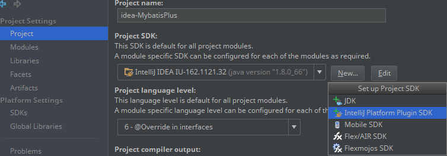
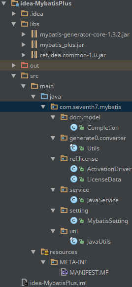

Preface
前天发现了个不错的插件，叫 Mybatis Plus，是一个 IntelliJ IDEA 插件，用于协助编写使用MyBatis的程序。
插件官网上还给出了使用插件的 效果视频，感觉这插件能大大提升开发效率，于是安装它打算试试。
不料，安装后发现插件不允许试用，只能先购买后使用。于是我查了一些资料，试着自己处理掉DRM。
准备工作
按照 引用1 和 引用2 的方法，使用 jbe 直接修改类字节码。不过jbe貌似有bug，每次保存方法以后都会丢失一些信息（比如 保存Method body的字节码后，Method里 堆(Stack)的最大高度之类的信息就丢失了），导致IDEA载入这个插件的时候抛出载入类文件异常。
于是我改用 jd-gui 结合IntelliJ IDEA自带的Decompiler，反编译出原有的java代码，然后手动修改代码使其通过编译检查。
注意：每次修改代码后都进行编译，然后将编译后的类文件替换掉原来的jar包里的类文件，最后重启IDEA看效果和调试输出。
开工
作为切入点的两个类：JavaService 和 JavaUtil
|
|
用IDEA新建一个Java项目，并在 Project Structure 里选择 IntelliJ Platform Plugin SDK。没有这个选项就创建一个即可，如下图：

整个java项目的文件结构如下：

| 目录 | 作用 |
|---|---|
| /libs/ | 插件的原版jar包和它引用的一些包 |
| /src/main/java/ | 按照原版jar包里的包结构创建, 用于替换原版jar包里的类. |
| /src/main/resources/ | 目前只存放 MANIFEST.MF， 用于记录原版jar包对应的版本号. |
图中还有一些上面没有提到过的类，这些类以后会用到。只用这一张图也省得我再做其他的图了。
先从 JavaUtils 类下手好了
先把类反编译出来放到对应的包下面。反编译的类一般都会有些编译错误，导致这些错误的原因包括但不限于：
- Java泛型的类型擦除。
- 类型强制转换时候的 Unchecked 警告。
- 反编译工具不完善，没能及时更新。
泛型类型擦除这个比较好解决，根据IDE的提示猜出对应的泛型类型就好。猜不出来就先不用泛型，看运行时的异常再决定用什么类型。
以编译通过为基础，尽可能减少可能会导致运行时异常的代码，其他不会导致运行时异常的就不要管它。
按照 引用2 的说明，对 refVaild()Z 做修改。修改前：
|
|
修改后：
|
|
然后我又添加了个 public static String printStackTrace(String message)，调用后会像java抛出异常信息一样在 System.err 打印出调用堆。只不过这个方法只打印这个插件所在java包的信息，其余的不打印。这样，我就可以在任意地方插入调用这个方法的代码，然后从IDEA的标准输出里观察调试信息。代码很简单，我就不贴了。
好奇心驱使，我又翻了翻这个类，发现又有个内部类叫 public static class SystemData，负责收集系统的各种信息，比如 系统什么名字、用的什么JVM。有个方法叫 public static synchronized JavaUtils.SystemData getInstance()，负责初始化一个 SystemData 类的实例，直接修改它就能免除系统信息被收集。
然后是 JavaService 类
直接修改 stop()V 和 stopped()Z 即可，像下面这样：
|
|
在修改的过程中发现了一个 LicenseData.EMPYT。这个类名就很可疑，加上原来的代码好像想要把许可信息置空：
|
|
于是干脆进去看看这个类有什么蹊跷。
探索 LicenseData 类
其实这个类直到后来我才重视它，不过他也没有太大的重要性。我直接把需要修改的地方标注出来好了。
|
|
然后是 getType()Ljava/lang/reflect/Type;。在之后的逆向过程中发现 这个Method很可能是方便Gson反序列化用的。
|
|
与 LicenseData 相邻的包和类
既然挖到DRM部分了，那当然要好好看一看还有什么东西了。下面列出 com.seventh7.mybatis.ref 包下各个类的作用：
| 包/类名 | 作用 |
|---|---|
.http |
HTTP库 |
.license.ActivationDriver |
访问插件服务器, 查询key对应的激活信息. |
.license.ActivationResult |
联网验证key后得到的结果(成功或者失败). |
.license.LicenseData |
许可证信息, 包含 key 和激活结果. |
.license.RefConfigurable |
提供一个UI(文本框)输入key, 以此来激活插件. |
.CmProject |
IDEA载入一个Project后会调用 initComponent()V,而这个插件的作用就是 每当载入项目时前都向服务器上报key、激活信息以及系统信息. |
.RefProject |
负责通过IDEA发布通知, 告诉用户该激活了. |
.Uris |
与服务器通信要用到的一些URL. |
下面，一步一步的来解决DRM和信息上报问题。
AcitvationDriver 类和 ActivationResult 类
ActivationDriver 类只有一个静态方法 ActivationResult activate(String licenseKey)。方法里的代码很简单：拿key询问服务器是否有效。有效的话 方法就返回一个激活成功的信息，反之 返回激活失败的信息。
ActivationDriver.activate(String licenseKey) 返回的是一个 ActivationResult 类，这个类有两个工厂方法（Factory Method）: success(LicenseData licenseData) 和 fail(String messsage)。于是 只需要对 ActivationDriver 进行修改就好了。
为何不直接对
ActivationResult进行修改，使其永远返回激活成功? 因为:
- 这个类比
ActivationDriver复杂一些，所以改起来没有ActivationDriver简单。- 以后插件开发者再往代码的其他地方散布DRM时候，如果又用到这个类了，也方便以后再排查出来。
修改后的 ActivationDriver 很简单:
屏蔽 CmProject 类向服务器上报各种信息
方法也非常简单，在对应的包下面新建同名类并实现 com.intellij.openapi.components.ProjectComponent 接口，代码如下:
|
|
在修改 CmProject 之前我看了看这个类的代码，代码里除了HTTP通信以外，还与一个叫 MybatisSettings 的类在打交道。下面就开始对这个类进行研究和修改。
探索 MybatisSettings 类
这个类位于 com.seventh7.mybatis.settings 包里，负责读写插件的配置信息，比如 key 和一些插件的设置都会在这里进行存取。
不过，后来又发现还有个地方会读取配置信息而不经过这个类。
经过一番代码阅读，挑出了5个比较显眼的方法，并分别插入 printStackTrace(String message)，看看还有谁会通过它读写许可信息。
String getKey()void setKey(String key)String getResult()void setResult(String result)void setLicenseData(LicenseData licenseData)
这里值得说一下的是，setKey(String key) 方法做了点儿小工作：
|
|
经过一番查找后发现，在IDEA提供给插件粗放配置文件的地方（在 ~/.IntelliJIdea<版本号>/config/options/），这个类在管理一个文件来存放插件的配置信息，文件名为 mybatis.xml。文件内容大致像下面这样，我只挑出重点的部分贴出来：
|
|
这样，上面那个 ++this.insert 就能解释清楚了：每当输入的key为空的时候，就吧 Insert 的值 +1。至于插件开发者为何这么做，本文后面会提到。
替换掉jar包类文件，然后重启IDEA并观察调试输出。发现一个叫 Utils$MLicenseValidator 的类调用了 setLicenseData() 方法，看来我又发现了其他隐藏起来的DRM验证了。
探索 Utils$MLicenseValidator 类
这个内部类位于 com.seventh7.mybatis.generate0.Utils$MLicenseValidator，不过类的内容很简单。下面贴出修改后的代码：
|
|
尝试关掉IDEA的 Completion 类
到目前为止，经过上面的代码修改后，看上去应该没有DRM验证的部分了。于是我覆盖掉原来jar包里的类，然后启动IDEA看效果。
IDEA启动后刚载入好java文件，就提示我”你确定要退出IDEA吗?”。我记得我没点关闭啊，于是我点Cancel，不到1秒又蹦出来了。我反反复复点了几次Cancel，IDEA一直弹出是否退出的对话框。看来肯定是这个插件搞的鬼了。
于是我打开jd-gui并载入这个插件的jar包，然后使用搜索 quit exit 之类的关键字。幸运的是我很快就找到了导致IDEA会退出的代码。
这段代码位于 com.seventh7.mybatis.dom.model.Completion。代码内容也很简单：判断插件配置文件里的 Insert 是否大于5，并且 能否在IDEA里找到这个插件的ID（也就意味着插件载入到IDEA了）。条件符合的话就删掉一个类文件（com.seventh7.mybatis.definitionsearch.MapperDefinitionSearch$1），然后不断的提示要求退出IDEA。这样，当下次启动IDEA的时候，插件会因为缺少类文件而无法工作。
解决方法也很简单：创建同名类并继承 Thread 类，覆盖 run()V 并且该方法内不写任何代码。
总结
经过两天的周折，终于把这个插件搞定了。
更新(2016-08-08)：Rover12421用JavaAgent写了个破解工具
项目地址：https://coding.net/u/rover12421/p/MyBatisPluginCrack
References:
1. http://blog.lanyus.com/archives/178.html
2. http://blog.lanyus.com/archives/115.html